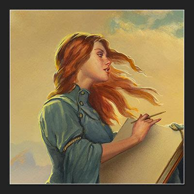

Continuing my journey with Brandon Sanderson, I can already say that this author became a personal discovery for me. I have always enjoyed fantasy, but rarely found myself genuinely committed to a world or a voice. Even when reading Tolkien’s original trilogy or “A Game of Thrones”, I did it more as a cultural checkpoint than out of emotional connection. With Sanderson, the experience is different. There is nothing to complain about — his writing simply pulls you in. I found myself automatically reaching for his books every evening, not out of routine but out of pure interest.
After finishing “Words of Radiance”, I even paused the Stormlight Archive to read a standalone novel — “Tress of the Emerald Sea”. Although separate from Roshar, it still belongs to the Cosmere and introduces a wave of new ideas. But back to the main topic: the second Stormlight book. If I had to describe its narrative approach in one sentence, I would say it is a story that builds long-term anticipation for something grand, while simultaneously delivering surprises you cannot predict in advance.
Much like “The Way of Kings”, this book delivers a finale that is difficult to compare with anything else in the genre. Sanderson’s sense of pacing is meticulous — he builds tension through small hints, patient foreshadowing, and scattered fragments of information that eventually converge into something powerful. “Words of Radiance” expands everything: its world, its thematic weight, and its emotional depth.
This book also gives significantly more space to Shallan. Her inner life becomes clearer, her past more detailed, and her motivations easier to understand. Secondary characters grow more distinct as well, gaining presence and nuance. Roshar itself widens — new kingdoms, factions, and distant powers enter the frame, sometimes indirectly and sometimes as quiet hints. And here again Sanderson excels: he gives the reader enough information to speculate, but never enough to feel in full control. You are present inside the events, but you never see the whole map.
“Words of Radiance” expands the world, deepens its characters, and lays the foundation for future events — all while keeping that same effect I felt back in the first book. You don’t just read a story here. You step into the author’s way of thinking. And that, perhaps, is what impresses the most. Sanderson manages to balance clarity, warmth, and complexity in a way that makes you want to return to his worlds again and again.
→ View Projects